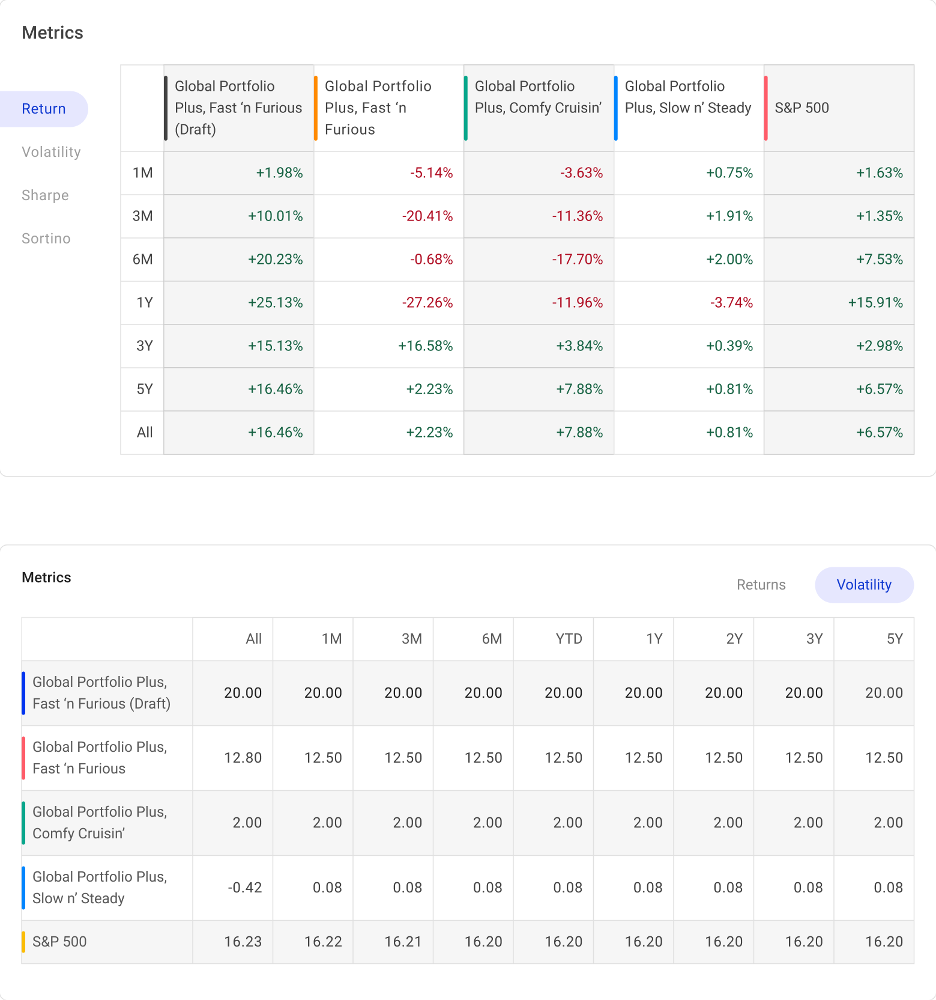
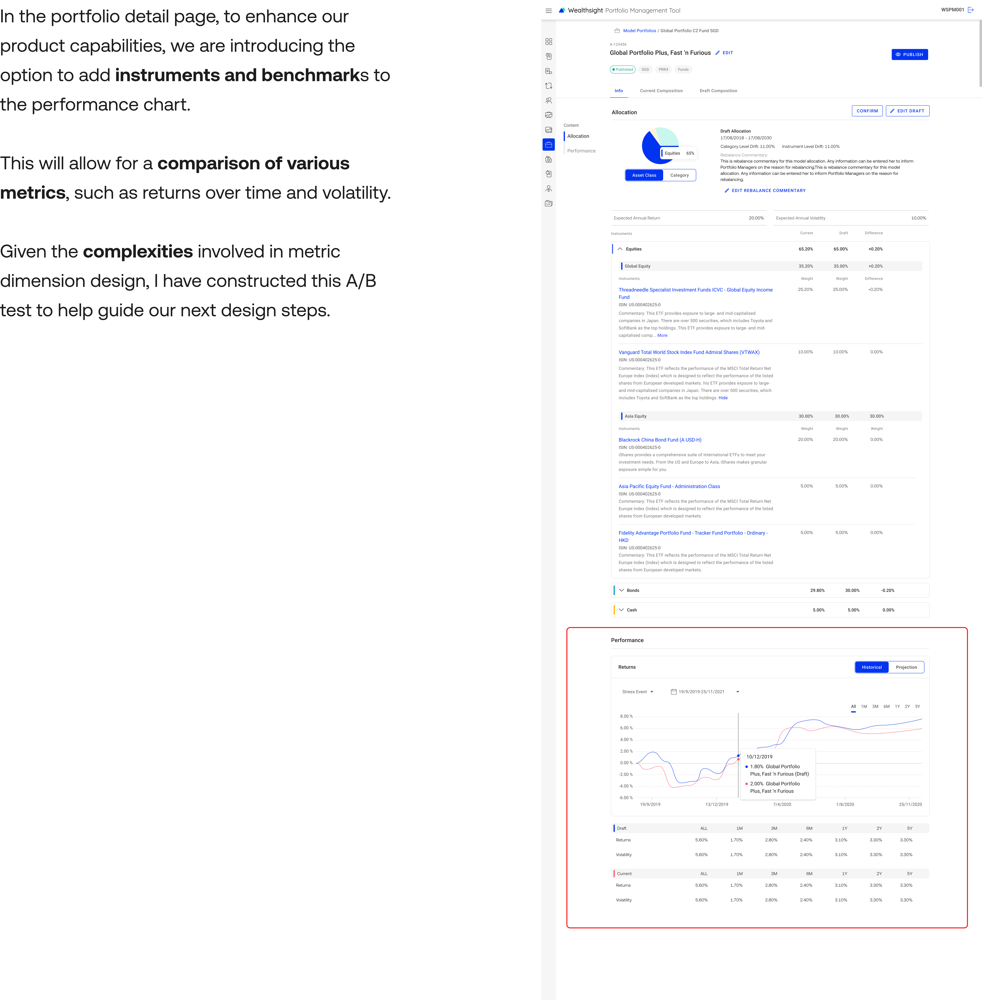
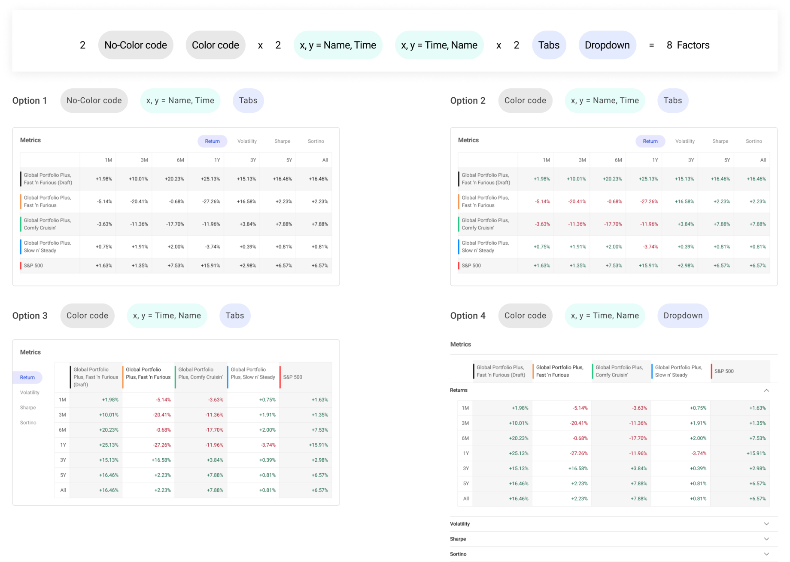
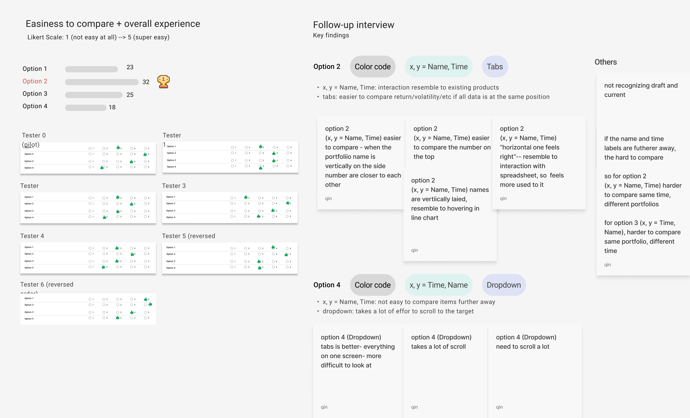

The test is a 2x2x2 8 factors testings. Not technically A vs B, but with four layouts (8 variables) we want to test out.

Option 2 got the highest score. and the follow-up interviews explained the results, 3 out of 5 reported the way it compares resembles the way they use excel or other spreadsheet tools.
